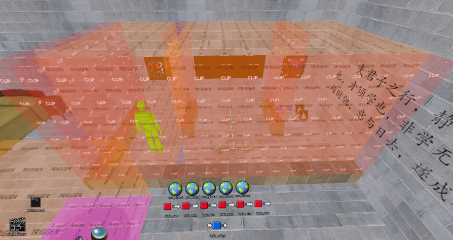

本章主要介绍一些综合运用地图知识进行制作的一些实例、教程。换句话说，是针对实现某种专门功能的教程。通过这些教程，你可以更轻易实现你想要的功能，并从中学习到经验，学而内化，最终可以根据自己的想法，对游戏机制、实体功能的了解等，整合不同的实体使其成为一个有机整体，甚至结合游戏VScript脚本系统实现更高级的功能，最终得到你想要的功能。
8.1 地图内显示中文提示/多语言支持#
在实际作图中，我们会发现在Hammer中无法输入中文，也就无法为env_instructor_hint添加中文提示，毕竟这是我们用来给玩家发出提示的实体。现在我们来看看到底怎么样可以实现中文提示呢？甚至某种程度上可以实现像游戏那样的多语言提示（分别每个玩家显示它们所使用的对应语言）？
8.1.1 准备工作#
首先你需要：
- •一个地图；
- •一个logic_scirpt实体；
- •一个或者一系列的env_instructor_hint实体（最好遵循一定的命名规则）；
- •一个好用的代码编辑器（比如VS Code）；
- •一点点C语言编程知识（不刚需，但是有的话更容易理解脚本如何运作）。
- •一个logic_auto实体。
可选的进阶内容：
- •env_global实体a；
- •语言切换系统（允许玩家手动切换）。
- •自动语言系统（直接为每个玩家显示专门的语言文字）。
8.1.2 配置地图内实体和编写代码#
首先，在地图内放置一个logic_script实体（目标名blogic_script）、logic_auto实体。
然后，在你的脚本目录下创建一个文件language.nut。（你可能需要一个更唯一的名称以防止冲突）
为你的logic_auto添加以下输入输出：
| My Output | Target Entity | Target Input | Parameter | Delay | Only Once |
| OnMapSpawn | logic_script | RunScriptFile | languagec | 0.00 | No |
- 表 8-1-1运行我们的脚本
此举可以让我们的脚本在地图加载后就立刻运行我们的语言脚本。
接下来我们需要编写一些代码。以下是一个示例language.nut文件：
Msg("Initiating Language Script\n") // 声明脚本已经运行
// 定义你的提示实体
local hint1 = Entities.FindByName(null,"your_hint_name1") // hint1 指向地图内叫「your_hint_name1」的实体
local hint2 = Entities.FindByName(null,"your_hint_name2") // 注意：你需要确保目标名唯一！
// ...
// 中文提示
function language_zh() {
hint1.__KeyValueFromString("hint_caption","你的提示文本1");
hint2.__KeyValueFromString("hint_caption","你的提示文本2");
// ...
}
// 英文提示
function language_en() {
hint1.__KeyValueFromString("hint_caption","Your hint text 1");
hint2.__KeyValueFromString("hint_caption","Your hint text 2");
// ...
}以上代码存储了我们所需要的所有提示信息。我们可以通过对logic_script使用RunScriptCode输入来切换提示的语言：
| My Output | Target Entity | Target Input | Parameter | Delay | Only Once |
| <条件>a | logic_script | RunScriptCode | language_zh() | 0.00 | No |
| <条件> | logic_script | RunScriptCode | language_en() | 0.00 | No |
- 表 8-1-2更改提示信息的语言
然后，你需要把language.nut放入到求生之路游戏目录下的...\Left 4 Dead 2\left4dead2\scirpts\vscripts下，这样脚本才能够被游戏读取和执行。
总结一下步骤：
- •通过logic_auto使logic_script执行RunScriptFile加载脚本（language.nut）；
- •特定的实体对logic_script执行RunScirptCode运行我们定义好的语言函数。
8.1.3 多语言#
可以在地图里创建多个按钮实体，每个语言函数存储各种提示信息对应的字符串，然后这些按钮通过调用这些函数来更改提示的内容。
至于一系列用来切换语言的按钮，你可以把它们放在一起，然后每个按钮前面放一个黑色遮罩固体（func_brush），当某个按钮被激活时就把这个遮罩方块去除，以表明玩家选中的是这个语言。同时其他语言按钮的遮罩需要显示。
选中一个语言后，通常需要先EndHint终止目前显示的所有提示信息，然后执行更改提示信息内容的函数，之后才再次ShowHint向玩家展示新的提示信息内容。这要求在I/O上你必须为每个输出提供足够长的延迟以便提示信息确实更换完成了。通常来说，0.01秒的间隔足够了。
借助全局状态实体env_global可以实现存储状态的功能，由此我们可以保存玩家所选择的语言，从而在后续关卡中保持一致性，而不需要玩家每次都要选择一次语言。
另外，考虑到玩家可能会直接游玩第二关或者之后的关卡，因此我们还得在后续关卡中也设置多语言切换的模块。要检测玩家是否已经设置了语言，只需要借助刚才使用的env_global实体。最好是是把这些功能做成可以轻松复制的整体，只需要在每个关卡的起始安全室放置，同时和你的脚本相融洽——你只需要修改需要加载的脚本名（通常我们会按关卡来制作脚本，除非像每个关卡都用到的通用功能我们才编写为通用脚本），其他全部保持不变。
8.1.4 示例#
以下是一个实例。


大概如下图所示。
在图 8-1-1 中，我在起始安全室中添加了这样的一个小区域，这个区域仅在玩家没有配置任何设置（即没有任何的全局状态实体为启用）时出现（即设置后这些区域相关的执行设置功能的实体会被Kill，从地图中移除）。所以这个区域只在玩家直接加载了这个关卡而没有游玩之前的关卡时出现。当然——我只是举了这个例子，我们实际上只需要切换语言的功能，所以我们可以在每个地图的起始安全室都放置一个切换语言的按钮，供玩家使用，而不必Kill掉删除。
可以看到，我分为了三个区域。从左往右看，第一个区域是切换语言的区域，第二个区域是难度设置区域，第三个区域是确认设置并退出。
因为我的地图仅支持中文和英文，所以只需要一个func_button实体就可以搞定语言的切换——利用OnUseLocked和OnPressed这两个输出条件：当按钮被按下时，触发OnPressed输出条件，执行按钮正常被按下时的输出并让按钮被上锁；当按钮上锁时被按下又触发OnUseLocked输出条件，然后执行此时（按钮被锁时）应该执行的操作，并解锁按钮。这样我们就可以在一个按钮上循环往复切换语言了。
在以上实例中，我切换语言的按钮（langauge_switch_button）的输出如下：
| My Output | Target Entity | Target Input | Parameter | Delay | Only Once |
| OnPressed | !self | Lock | 0.00 | No | |
| OnPressed | global_lang_zh | TurnOn | 0.00 | No | |
| OnPressed | global_lang_en | TurnOff | 0.00 | No | |
| OnPressed | logic_script | RunScriptCode | language_zh() | 0.00 | No |
| OnPressed | language_choose_hint | EndHint | 0.00 | No | |
| OnPressed | language_selected_hint | EndHint | 0.00 | No | |
| OnPressed | language_selected_hint | ShowHint | 0.01 | No | |
| OnPressed | language_choose_hint | ShowHint | 0.01 | No | |
| OnUseLocked | !self | Unlock | 0.00 | No | |
| OnUseLocked | global_lang_zh | TurnOff | 0.00 | No | |
| OnUseLocked | global_lang_en | TurnOn | 0.00 | No | |
| OnUseLocked | logic_script | RunScriptCode | language_en() | 0.00 | No |
| OnUseLocked | language_selected_hint | EndHint | 0.00 | No | |
| OnUseLocked | language_choose_hint | EndHint | 0.00 | No | |
| OnUseLocked | language_choose_hint | ShowHint | 0.01 | No | |
| OnUseLocked | language_selected_hint | ShowHint | 0.01 | No |
- 表 8-1-3language_switch_button的输出列表
是不是看起来头皮发麻？别担心，我们一步一步拆解这些繁杂的输出。
如果你注意观察，会发现OnPressed和OnUseLocked两个输出条件下的输出几乎是一模一样的。具体来说，OnPressed启用的是中文语言设置，OnUseLocked则启用的是英文语言设置。
配置中文语言设置时，我们把对应的语言全局状态实体设置为启用，而其他语言的设置为关闭。例如，在上面例子中，设置中文时，把global_lang_zh设置为启用（提供输入TurnOn），而global_lang_en设置为禁用（提供输入TurnOff），英文的则相反。同时，我们执行对应的语言函数（即对logic_script实体执行RunScriptCode输入），这些是你已经写好在脚本里了。在这里，我设置了单独的logic_auto来加载所需要的所有脚本到logic_script实体上，这只需要对logic_script实体使用RunScriptFile输入来加载你需要加载的一切脚本。
language_choose_hint和language_selected_hint是我设置的两个env_instructor_hint实体，其中choose_hint是告诉玩家选择一个语言，而selected_hint则是显示当前玩家选中的语言。它们的内容在执行语言函数后就会更改，所以需要先EndHint，然后再ShowHint展示更改后的内容。
对自身（!self指运行这个输出的实体本身）进行加锁和解锁是为了实现状态切换，这样我们才能够让按钮实现语言的切换，前面已经阐述过原理，不再赘述。
现在是不是觉得这些输出其实很简单？
你可能注意到我放置了两个触发器区域。没错，它们是trigger_multiple，用于显示对应区域的提示信息。左边语言区域的trigger_multiple会在进入时（OnStartTouch）显示当前设置的语言，离开此区域时（OnEndTouch）则停止显示提示信息。
不过这些并不在我们的讨论范围内，现在事实上我们已经完成了我们切换语言的按钮了。
总的来说:
- •你需要在地图里放置一个切换语言的按钮
- •地图的配套语言脚本、全局状态实体和logic_auto、logic_scirpt。
- •你需要一个logic_auto来读取你的脚本，对logic_script提供RunScriptFile输入来加载，然后提供RunScriptCode输入来执行脚本里的语言函数。
- •然后，你想要在地图里延续上一次的语言设置，那么全局状态实体和对应的logic_scirpt就有用了： logic_auto通过检查对应的全局状态实体有没有启用来执行你给它预先设置好的输出。因此，让检查中文语言全局状态实体的logic_auto来执行logic_script的RunScriptCode输入，参数为对应的语言函数名（比如language_zh()）。
- 习题16
- 一、选择题（共15道）
- 1.实现地图中文提示功能时，核心用于执行语言脚本的实体是？（ ） A. env_instructor_hint B. logic_script C. func_button D. env_global
- 2.地图加载后自动运行语言脚本，需通过 logic_auto 向 logic_script 发送的输入是？（ ） A. RunScriptCode B. ShowHint C. RunScriptFile D. TurnOn
- 3.语言脚本文件（如 language.nut）需放置在游戏目录的哪个路径下？（ ） A. \Left 4 Dead 2\left4dead2\maps B. \Left 4 Dead 2\left4dead2\scripts\vscripts C. \Left 4 Dead 2\left4dead2\materials D. \Left 4 Dead 2\left4dead2\models
- 4.切换语言时，需调用脚本中定义的语言函数，应向 logic_script 发送的输入是？（ ） A. RunScriptFile B. RunScriptCode C. EndHint D. LoadScript
- 5.已显示的提示信息更改后，需执行什么操作才能让玩家看到新内容？（ ） A. 直接 ShowHint B. EndHint → ShowHint C. 重启地图 D. 仅 EndHint
- 6.用于保存玩家语言选择状态、实现跨关卡语言一致性的实体是？（ ） A. logic_auto B. env_instructor_hint C. env_global D. trigger_multiple
- 7.跨关卡保持语言设置时，env_global 实体需满足什么条件？（ ） A. 每个关卡的实体类型不同 B. 每个关卡的目标名保持一致 C. 仅在第一关放置即可 D. 需绑定到 logic_script 实体
- 8.单按钮循环切换中英文时，按钮被按下后需先执行的自我操作是？（ ） A. Unlock B. Lock C. ShowHint D. TurnOff
- 9.切换语言时，为确保提示信息更换完成，输出之间建议设置的延迟时间至少为？（ ） A. 0.01 秒 B. 1 秒 C. 5 秒 D. 无需延迟
- 10.检测玩家是否已设置语言，需借助哪种实体的状态判断？（ ） A. func_button B. env_global C. logic_script D. trigger_multiple
- 11.脚本中通过哪个函数获取地图内指定名称的提示实体？（ ） A. FindEntity() B. Entities.FindByName () C. GetHintEntity () D. LoadEntity ()
- 12.启用中文语言设置时，需对对应中文全局实体（如 global_lang_zh）发送的输入是？（ ） A. TurnOff B. Lock C. TurnOn D. Unlock
- 13.语言切换按钮的 OnUseLocked 输出对应的功能是？（ ） A. 启用中文设置 B. 启用英文设置 C. 解锁按钮并切换至另一语言 D. 删除按钮实体
- 14.为避免语言脚本文件名冲突，建议采取的措施是？（ ） A. 使用唯一文件名 B. 所有地图共用一个脚本文件 C. 放置在不同文件夹 D. 无需特殊处理
- 15.仅在玩家未配置语言设置时显示语言切换区域，需结合 logic_auto 检测哪种实体的状态？（ ） A. func_button B. env_global C. trigger_multiple D. logic_script
- 二、填空题（共 5 道）
- 16.语言脚本中，通过__KeyValueFromString("hint_caption","文本")函数修改______实体的提示内容。
- 17.跨关卡保持语言设置时，env_global实体的_____________必须在所有关卡中保持一致。
- 18.更改提示信息后，需先执行_________输入终止当前提示，再执行ShowHint显示新内容。
- 19.单按钮切换语言时，通过OnPressed和_______________两个输出条件实现状态循环。
- 20.logic_auto实体通过读取env_global的______（启用 / 禁用）来执行预设输出，实现语言状态继承。
- 三、简答题（共 3 道）
- 21.简述实现地图多语言切换功能的核心步骤（至少包含实体配置、脚本操作、状态保持）。
- 22.为什么已显示的提示信息更改后，必须执行 EndHint→ShowHint 操作才能更新？直接 ShowHint 会出现什么问题？
- 23.如何通过 env_global 实体实现跨关卡语言设置一致性？需注意哪些关键配置？
第9章 逆向工程#
原书脚注
- 原书第 153 页 a env_global实体不存在于创作工具中默认的FGD文件，因此你不会在可放置的实体列表中找到它。你可以为其添加对应的FGD内容或直接在地图内更改一个实体的classname为env_global。
- 原书第 153 页 b 指Targetname键值。
- 原书第 153 页 c 请勿填写文件拓展名。
- 原书第 154 页 a 取决于你所应用的具体实体。比如你想要通过按钮来切换的话，可能的条件是OnPressed或OnUseLocked。
- 原书第 155 页 a 在logic_auto中，此键值的内部名称：globalstate，即实际的键名。在env_global中，初始状态的键名叫initialstate（FGD里美化名称为Initial State），可选的值为0（Off）、1（On）、2（Dead），即禁用、启用、已移除；输入TurnOff、TurnOn、Toggle可以用于切换env_global实体的状态。